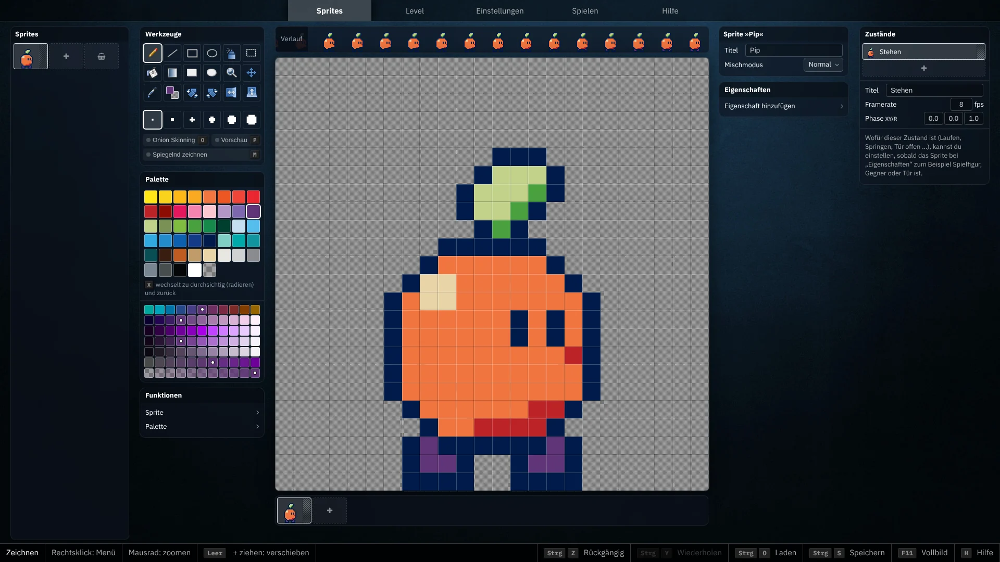
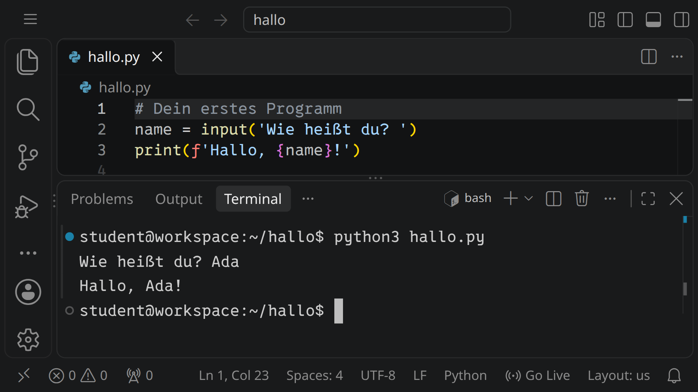

2D Game Studio
Spiele bauen, ohne zu programmieren: Figuren Pixel für Pixel zeichnen und animieren, ihnen Eigenschaften geben und daraus Level bauen. Ohne Anmeldung, auch auf dem Tablet.
Zum 2D Game Studio
Hackschule Workspace
Eine Entwicklungsumgebung im Browser: Visual Studio Code mit Terminal, Git, vielen Programmiersprachen und eigenen Datenbanken, dazu Aktivitäten mit Aufgaben, die der Workspace selbst prüft. Für Schulen, mit Anmeldung.
Zum Workspace